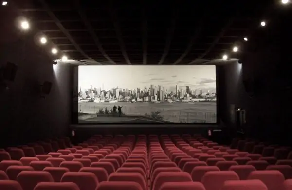

|  |
É a adaptação dos títulos que aproxima o filme do seu público. Por isso, diferentemente do que ocorre no processo de legendagem - onde um profissional da área de tradução é contratado para esse serviço e conta com total liberdade na tradução dos roteiros de filmes - a tradução dos títulos dos filmes estrangeiros é feita pela área de marketing dos estúdios e distribuidoras, que levam em consideração que o mesmo deve se adequar ao gênero – comédia, drama etc. – e ao público-alvo do filme, tentando fazer uma ligação entre o título original do filme a expressões que são comuns no país e que atendam a propósitos comerciais. Para reforçar a ideia de identificação cultural que as distribuidoras levam em consideração, pode-se exemplificar a diferença de título que um mesmo filme recebe no Brasil e em Portugal. |
||
|
É seguindo essa lógica que as produções derivadas de obras literárias tendem a manter a
mesma tradução para uma identificação imediata do público. Filmes que utilizam o nome de uma
música como título, como Mamma Mia! e Across the Universe, normalmente mantêm o título em
inglês devido ao sucesso e à facilidade de reconhecimento. No entanto, esse conceito não é
uma regra; por exemplo, a produção estrelada pelos Beatles Hard Day’s Night foi chamada de
Os Reis do Iê Iê Iê.
|
|||
|
Em seu livro sobre as chanchadas, o jornalista Sérgio Augusto indicou que o filme Melodia da
Broadway
havia
inaugurado no Brasil o processo de legendagem de filmes sonoros estrangeiros. Entretanto, Augusto
não
apresentou
nenhum dado que comprovasse esse pioneirismo e nenhuma explicação sobre como essa legendagem havia
sido
realizada pioneiramente antes desse processo ser adotado mais amplamente.
|
|
As legendas podem ser usadas para traduzir o diálogo de um idioma estrangeiro para o idioma nativo
do público.
Não é apenas o método mais rápido e mais barato de traduzir conteúdo, mas também é geralmente
preferido, pois é
possível que o público ouça o diálogo original e as vozes dos atores.
|